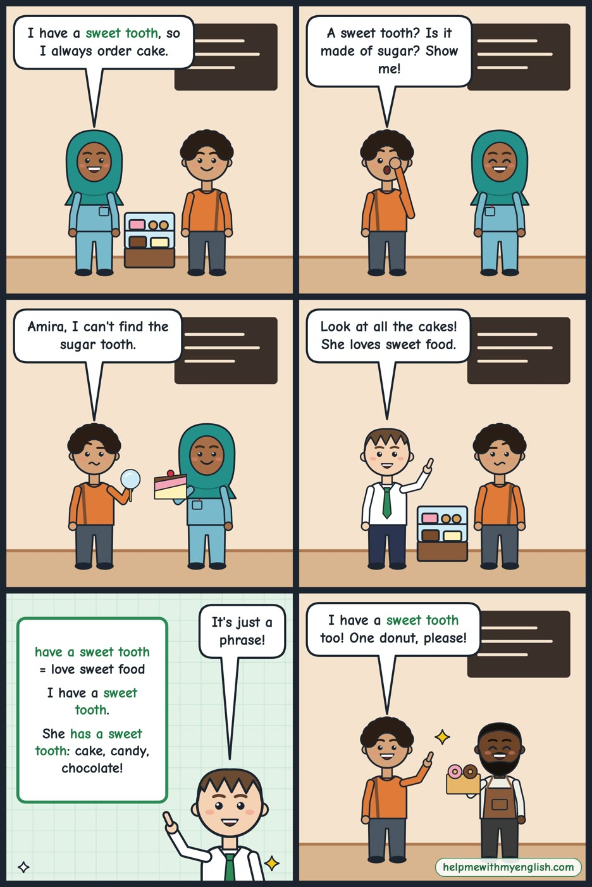

have a sweet tooth
To love sweet things like cake, candy and chocolate.
I have a sweet tooth, so I always order dessert.
Tip: Use 'have a sweet tooth' for a general love of sweet food, not a single moment; say 'I have a sweet tooth' (not 'a sweet teeth').
Hear it in conversation
OlenaI'm going to the bakery. Do you want anything?
KofiMaybe a coffee. Oh, and one of those chocolate croissants.
OlenaOnly one? You usually buy three.
KofiI'm trying to eat less sugar this month. It's hard, though. I really have a sweet tooth.
OlenaThen let's get a fruit tart too. It's a little healthier.
Workbook
1. What does it mean?
In this conversation, what does 'have a sweet tooth' mean?
2. Fill the gap
My sister , so there is always chocolate in her bag.
3. Choose the best reply
Amira: Do you want some of this cake? Or are you more of a salty snack person?
4. Your turn: speak
Do you prefer sweet or savoury food? Tell me about your habits.
Show an example answer
I definitely prefer sweet food. I have a sweet tooth, so I usually finish a meal with something like ice cream or a piece of cake. I try to eat healthily, but I can never say no to chocolate.
Answer key: have a sweet tooth
- 1. C. To really like sweet foods such as pastries and chocolate
- 2. has a sweet tooth
- 3. C. Definitely cake. I have a sweet tooth.
- 4. Example: I definitely prefer sweet food. I have a sweet tooth, so I usually finish a meal with something like ice cream or a piece of cake. I try to eat healthily, but I can never say no to chocolate.
See it in a comic
